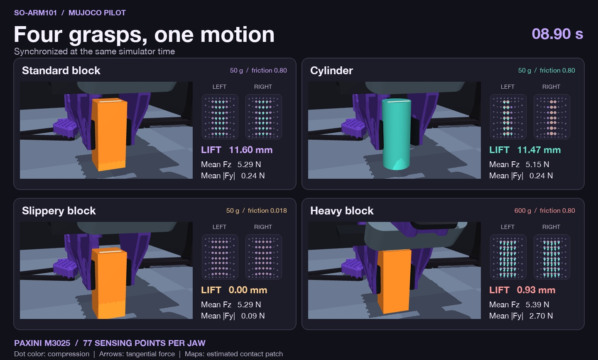
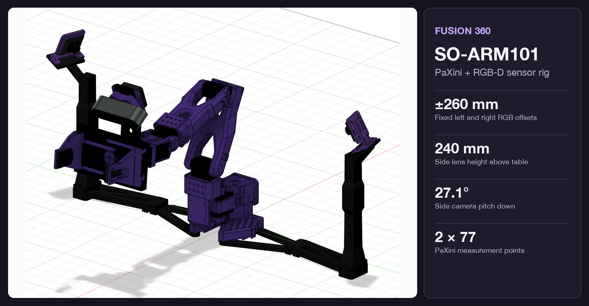

Four synchronized MuJoCo trials. Dots show normal compression and arrows show in-plane force.
Arm
SO-ARM101
Tactile
Two 77-point PaXini pads
Vision
Wrist RGB-D + two side cameras
Evaluation
MuJoCo pilots
Four grasps on one clock
The standard and slippery blocks had the same mass and the same reported mean normal force of 5.29 N per jaw. Their measured rise differed by 11.60 mm. A single normal-force reading can accompany very different lift outcomes.
Full-arm dashboard. Robot motion, wrist RGB and depth, both side views and the two force maps share one simulation timeline.

Matched lift window. Each lift command runs from 7.50 to 8.90 s. Read the four conditions at the same point in the replay.
Scripted MuJoCo trials · one episode per condition
ObserveRead both force histories, camera motion, and arm state.
DecideContinue the lift, try a bounded regrasp, or set the item down.
Designing the tactile gripper
The SO-ARM101 assembly adds a rack-and-pinion parallel gripper, two opposing PaXini M3025 pads, and camera mounts. The dimensions below come from CAD checks.
R4 design film. Sensor mounts, parallel jaw travel, the cable window, and wrist hardware.

R7 system assembly. Each side camera is 260 mm from center and 240 mm above the table.
R4 · Parallel jaws
Fitted two M3025 pads and connected the front screw supports around a cable window. The sensor-face gap spans 10.4–82.4 mm in CAD.
R5 · Wrist and cabling
Kept the D435i on the wrist, reduced bridge volume from 14.73 to 8.62 cm³, and compared wrist-side and forearm mounting routes for the PaXini box.
R7 · Fixed RGB mounts
Added split masts and rails for two SA26MCM cameras at a 27.1° downward tilt. No robot–mount intersections appeared in 51 sampled CAD poses.
These MuJoCo pilots test when evidence from contact changes a decision about placement, inspection, or whether there is time to try again.
Where to release a load
The same 85 g shell needed different release positions when its hidden ballast moved. A follow-up let Astra request a fresh tactile reading and choose release waypoints on three new shell shapes.
Across 36 matched placement conditions, Astra passed 33/36 and the rule passed 34/36. Mean time including model inference was 39.66 s versus 7.97 s.
Two latch states start at the same height and look identical to the cameras. A small contact can reveal the state. A stronger press can seat the latch, which would erase the original defect during inspection.
Fixed probes classified 6/6 cases using PaXini force and 6/6 using simulated joint current, with zero latch changes. One paired Astra trial completed before repeated inference timeouts.
In the earlier 26-trial recovery pilot, the sensor-based rule selected 13 useful picks. Qwen2.5-VL 7B selected five with aligned tactile observations and the same five with shuffled input. Recovery pilot results
Reproduce the pilot
The kit includes the simulator, printable parts and sensor traces. Each simulated pad exports 77 vectors with three force components. The dashboard offers both point-contact and estimated contact-patch views.
Calibrate pad zero, force axes and camera poses, then compare measured slip and regrasp traces with the simulator. The planned latch study independently records the latch state before and after inspection.